Overdrive and Intermediate Clutch Assemble
Overdrive and Intermediate Clutch Assemble
Tools Required
* J 23327 Clutch Spring Compressor
* J 44764 Clutch Spring Compressor
* J 45126 Snap Ring Pliers
* J 45135 Seal Protector
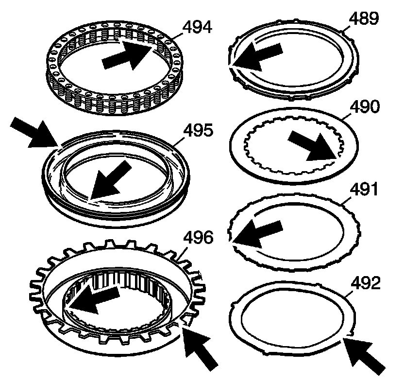
1. Inspect the housing for the following:
* Plugged feed passages
* Worn or damaged splines
* Damaged or worn springs
* Damaged or worn pistons
* Worn or damaged clutch plates
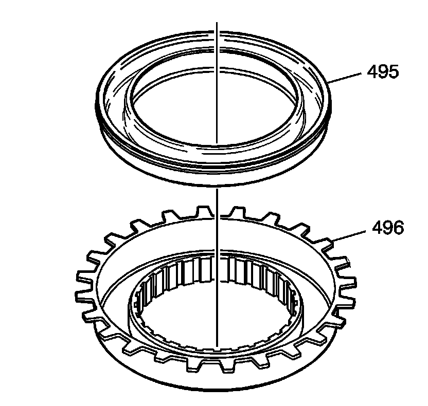
2. Install the intermediate piston (495) into the intermediate clutch housing (496).

3. Install the intermediate clutch spring (494).
4. Install the intermediate housing (496).
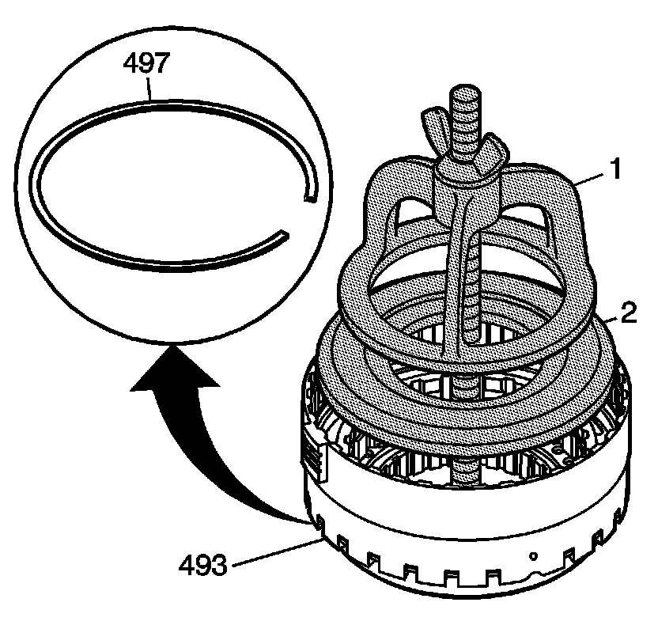
5. Use J 44764 and J 23327 to compress the housing.
6. Install the intermediate clutch housing retainer ring (497).
7. Remove J 44764 and J 23327 .
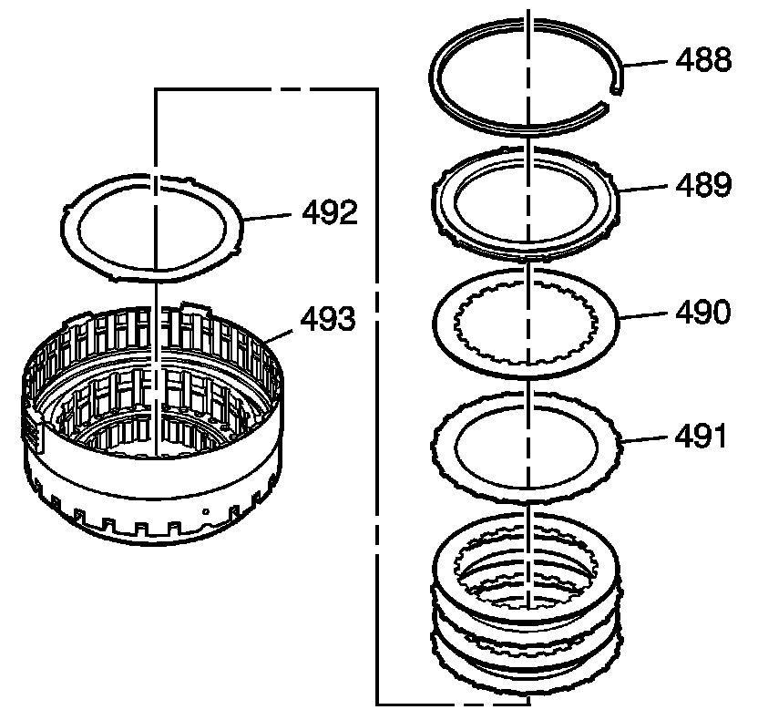
8. Install the intermediate apply plate (492).
9. Install the intermediate clutch plates. Starting with the intermediate clutch plates (491) with external splines. Alternating with the intermediate clutch plates (490) internal splines. Refer to Clutch Plate Selection Specifications (Clutch Plate Selection Specifications) .
10. Install the backing plate (489).
11. Install the intermediate backing plate retainer ring (488).
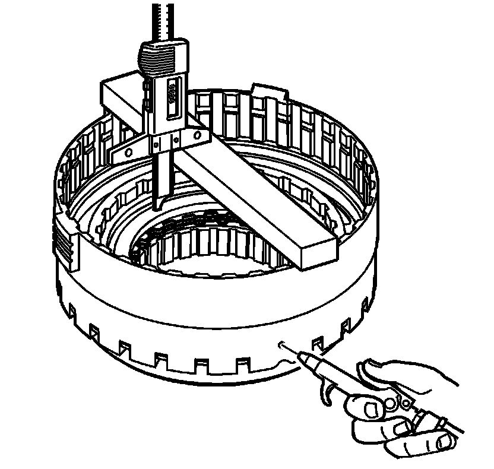
12. Measure the distance between the intermediate clutch backing plate and the bottom of the gage bar. Measure three times in different locations on the backing plate. Record this as H1.
13. Apply 65 PSI (448.17 kPa) of air pressure to the specified port. Measure the distance between the intermediate clutch backing plate and the bottom of the gage bar. Measure three times in different locations on the backing plate. Record this as H2.
14. Subtract H2 from H1 this is the clutch pack travel. Refer to Clutch Piston Travel Specifications (Clutch Piston Travel Specifications) .
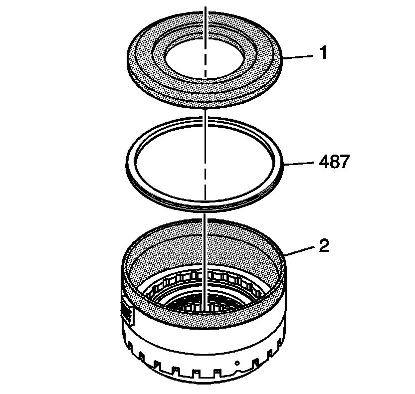
15. Use J 45135 (2) and J 44764 (1) to install the overdrive piston (487).

16. Install the overdrive piston spring (486).
17. Use J 44764 and J 23327 to compress the overdrive clutch piston spring (486).
18. Install the overdrive clutch spring retainer (485).
19. Remove J 44764 and J 23327 .
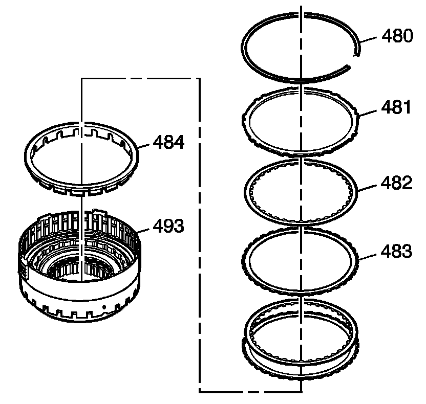
20. Install the overdrive clutch spacer (484).
21. Install the overdrive clutch plates. Starting with the overdrive clutch plates (483) with external splines. Alternating with the overdrive clutch plates (482) with internal splines. Refer to Clutch Plate Selection Specifications (Clutch Plate Selection Specifications) .
22. Install the overdrive backing plate (481).
23. Install the overdrive clutch retainer ring (480).
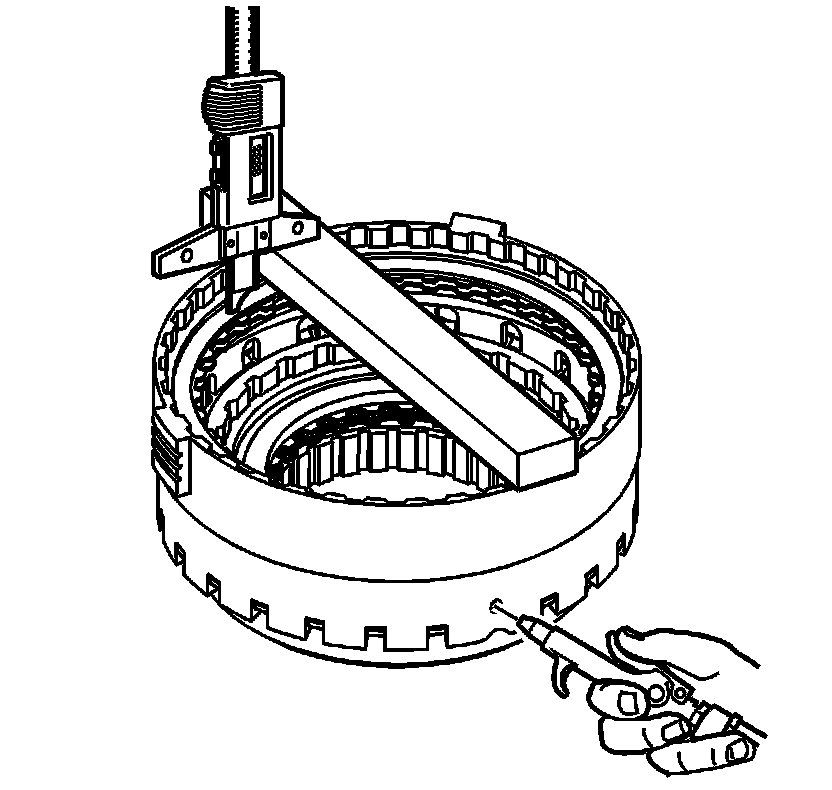
24. Measure the distance between the overdrive clutch backing plate and the bottom of the gage bar. Measure three times in different locations on the backing plate. Record this as H1.
25. Apply 65 PSI (448.17 kPa) of air pressure to the specified port. Measure the distance between the overdrive clutch backing plate and the bottom of the gage bar. Measure three times in different locations on the backing plate. Record this as H2.
26. Subtract H2 from H1 this is the clutch pack travel. Refer to Clutch Piston Travel Specifications (Clutch Piston Travel Specifications) .
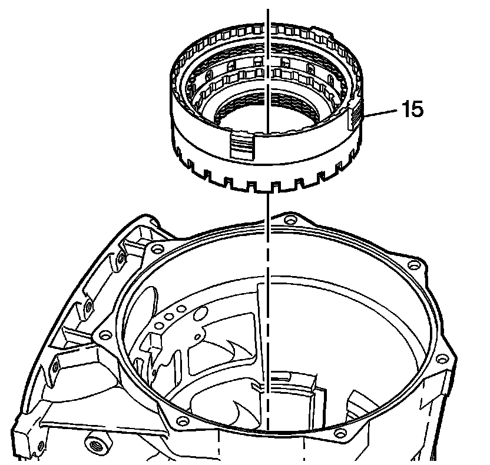
27. Install the overdrive clutch housing (15) into the case.
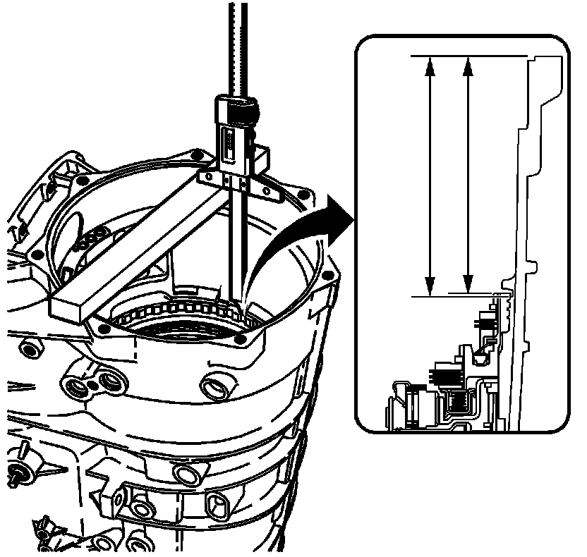
28. Measure the distance from the bottom of the gauge bar to the top of the overdrive and intermediate clutch. Record this as M1.
29. Measure the distance from the bottom of the gage Bar to the bottom of the intermediate and overdrive retainer ring groove in the case. Record this as M2.
30. Subtract M2 from M1. This will be dimension M.
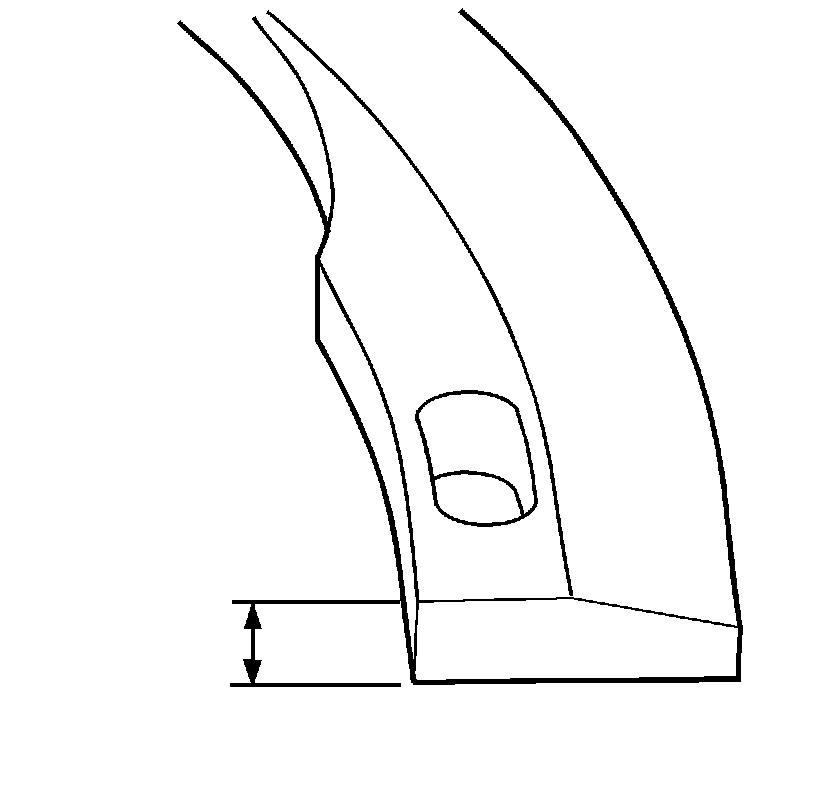
31. Measure the intermediate and overdrive clutch housing retaining ring (14). Refer to Intermediate and Overdrive Clutch Housing Retaining Ring Specifications (Intermediate and Overdrive Clutch Housing Retaining Ring Specifications) for the correct size washer.
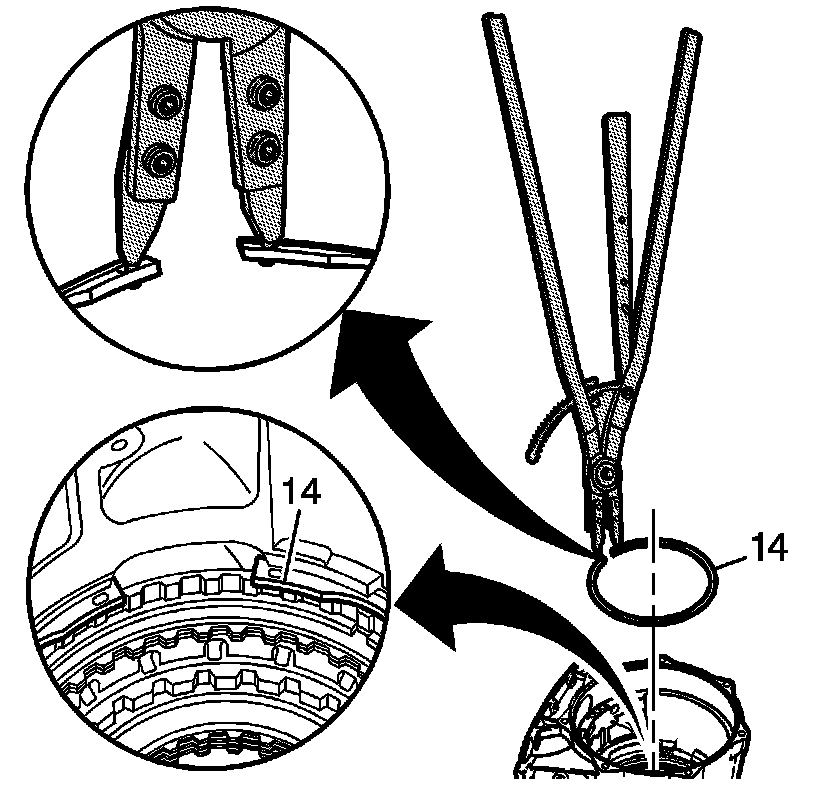
Caution: Use care when removing or installing the snap ring. Be sure the J 45126 snap ring pliers are installed properly onto the snap ring or bodily injury may occur.
Important: If housings is replaced a measurement must be taken for end play.
32. Using J 45126 install the intermediate and overdrive clutch housing retainer ring (14) into the case.